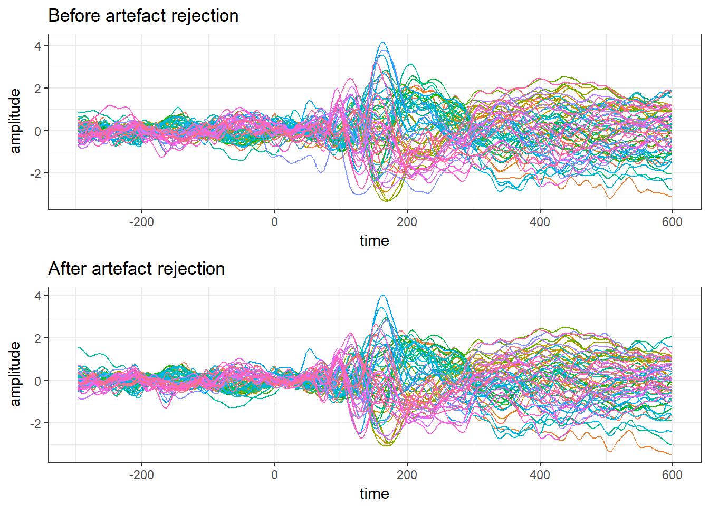

As mentioned in my last post, an issue doing EEG analysis in R at the moment is that there’s a distinct lack of tools in R for a lot of the typical processing steps. In the past I’ve done a lot of processing in Matlab (specifically with EEGLAB and Fieldtrip) and shifted things over to R for statistics. But all is not lost. For example, with the following code, I can run a bunch of preprocessing, including automatic artefact rejection, and have nice ERPs in R in the blink of an eye!
import mne
import numpy as np
import pandas
from autoreject import (LocalAutoRejectCV, compute_thresholds,
set_matplotlib_defaults, plot_epochs)
from functools import partial
thresh_func = partial(compute_thresholds, method='random_search')
ar = LocalAutoRejectCV(thresh_func=thresh_func, verbose='progressbar')
eogChans = (64,65,66,67)
miscChans = (68,69,70,71)
subjects = []
file_list = []
for i in range(6):
file_list += ['EXAMPLEDATA{0}.bdf'.format(i+1)]
unclean_epochs = []
for file in file_list):
raw = mne.io.read_raw_edf(file,preload = True,eog = eogChans,misc = miscChans)
raw.info['bads'] = ['EXG7','EXG8']
picks = mne.pick_types(raw.info, meg=False, eeg=True, eog=False, exclude='bads')
events = mne.find_events(raw, stim_channel='STI 014')
event_id = {'light': 100, 'no light': 128}
tmin = -.3
tmax = .6
raw.filter(1, 45,l_trans_bandwidth = 1, h_trans_bandwidth = 5, filter_length = 'auto')
montage = mne.channels.read_montage('biosemi64')
raw.set_montage(montage)
raw_avg_ref, _ = mne.io.set_eeg_reference(raw)
epochs_avg_ref = mne.Epochs(raw_avg_ref, events=events, event_id=event_id, tmin=tmin,
tmax=tmax, picks=picks, add_eeg_ref=False,preload = True, detrend = None,decim = 4)
unclean_epochs += [epochs_avg_ref]
preclean_epochs = mne.concatenate_epochs(unclean_epochs)
epochs_ar = ar.fit_transform(preclean_epochs.copy())
evoked_clean = epochs_ar.average()
evoked_preclean = preclean_epochs.average()
df = evoked_clean.to_data_frame()
df.to_csv('EXAMPLEDATA\\evoked_clean.csv')
df = evoked_preclean.to_data_frame()
df.to_csv('EXAMPLEDATA\\evoked_preclean.csv')The eagle-eyed amongst you have probably spotted something unusual about this code. No, not that it’s bad. All my code is bad, there’s nothing unusual about that. It’s not R code. It’s Python. I wrote the above code a few months ago when I was just starting out with it. It uses the MNE package to load the raw data, run automatic artefact rejection, and save both the cleaned and unclean data as CSVs.
And yet, even though it’s Python code, I ran it directly in an R Notebook.
Normally when you set up a code chunk in an R Notebook, you add something like this (without the blocks):
`
``{r}
Add your code here.
`
``
But a fun thing about R Notebooks is that they’re written in R Markdown, and R Markdown separates your code into individually executable chunks. Those chunks can run code from a variety of different languages when you knit the document together, one of which is Python!
The ‘{r}’ can be replaced with, for example ‘{python}’. Knit will then use the specified language engine to execute the code. Of course, this also requires you to have a functioning Python installation set up on your machine - in Windows, I highly recommend using Anaconda to get things up and running.
An issue here is that it runs the code as a separate enviroment; you can’t pass things from a Python chunk directly into another chunk, so you have to send it via the file system. Here I just output CSVs; you could also try out feather, which will probably be faster.
library(tidyverse)
library(ggplot2)
library(scales)
library(grid)
library(gridExtra)
clean_data <- read_csv('C:\\Users\\Matt\\Documents\\Github\\ExploringERPs\\evoked_clean.csv') %>%
gather(electrode, amplitude, -time)
unclean_data <- read_csv('C:\\Users\\Matt\\Documents\\Github\\ExploringERPs\\evoked_preclean.csv') %>%
gather(electrode, amplitude, -time)
theme_set(theme_bw())
unclean.plot <- ggplot(unclean_data, aes(time, amplitude))+
geom_line(aes(colour = electrode)) +
ggtitle('Before artefact rejection') +
guides(colour = FALSE)
clean.plot <- ggplot(clean_data, aes(time, amplitude))+
geom_line(aes(colour = electrode)) +
ggtitle('After artefact rejection') +
guides(colour = FALSE)
grid.arrange(unclean.plot,clean.plot)
(#fig:plot_topgraphy)ERPs and a topography at 172 ms after stimulus onset
Of course, why do this? Personally, I’m still just getting to grips with Python and MNE, and some of the analyses I want to do aren’t so easy to do in Python (at least not for me, not yet). This is as much a demonstration of the fact that you are not tied to using one language as anything else. You can use multiple languages in combination when you need to, even simultaneously. You can also call R code from Python using, for example, RPy2.
Another alternative to running Python in code chunks, as done here, is to use the recently released reticulate package for R, which allows you to run Python code directly within R. So you’d be able to cut out the middleman and not write to disk, as I had to above. I’ll try to get on to that soon!
comments powered by Disqus